by Samia A. Halaby
Conducted in June of 2003 at The International Center of BeitLahem
In cooperation with Faten Nastas Mitwasi, Art Coordinator
In the first phase of the project, materials are collected. In the second phase parts are built without regard for the end product. When the student artists judges that enough parts have been created then the third phase begins -- a period of trial and error in assembling the parts into a new whole. The second and third steps will merge. As soon as you begin to assemple parts, new ideas grow. These new ideas lead to the making of new parts. You should begin to experience a natural cycle of development. How parts are fit together and what shape the final whole will have should grow from this process of work.
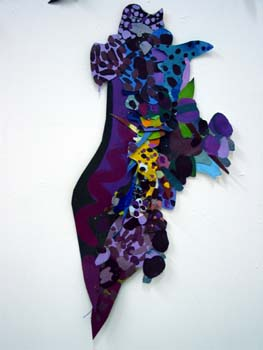
This assembling of parts could apply to both the subject of the work as much as to the materials and forms of the work. In the work of Adawi and Rakoui below, the parts are images which are symbolic. The colors of the flag, the face of a woman, the bloody white dove, the cactus plant. All these are elements that have their own significance. When put together they create a new meaning. In Awadi's and Rakoui's, it is the subject matter that is made out of assempled parts.
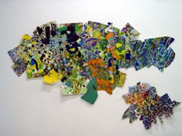
In Kari's work below and in the African toys, it is the matterials that are assembled. The subject is simple. It is an insect or an airplane or a motorcycle. But the parts have been collected and slowly assembled. In Kari's work, the idea of an insect emerges as the parts are being assembled,
Exploration in collecting materials is encouraged. Perhaps woodworking shops in BeiLaehm have scraps or discarded materials. Plastic containers and bottles, tin cans, paper wrappers, cardboard, wire, broken pottery, twigs, woven materials, paper, threads, wool, leather, and anything else that might be assembled is acceptable. Methods of adhering the parts include glue, string, wide, nails, or any other method available.
Working with colors on paper or canvas with traditional materials is also acceptable. Objects can be painted or drawn on paper or canvas and then cut to shape and stored until there is enough to assemble.
Please begin to collect materials in advance and begin to think of what you want to do. Some of you might wish to begin working. This will make my limited number of days with you more useful. Also, Please read the historical background so that we might conduct a productive discussion.
The goal is that each student artist challenge their habits and expand their thinking – to reach out to explore. The hope is that the process will allow for discovery – allow the student artist to expand on their past practice without abandoning it. It is hoped that this discovery will hapen because the project allows for ideas to grow while the work is being created part by part. It is hoped that there would develope a fruitful process of work. In this project, I am encouraging students to not dictate to their work what the final result would be.
3.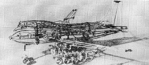
4.
1. Kari Steele, Killer Bee, 2003. Metal, glass stone, 2.5 x 2.5 x 5”
2. Kari Steele, Fire Eater, 2003. Metal, glass, crystal, 8x5.5.x 2”
3. and 4. The airplane and the motorcycle are toys for children made in Africa. They are palm-size and made of found materials, mostly of wire, that it manipulated and twisted without solder or other adhesives. They were exhibited at the Havana Biennial in 1989.
Kari Steele finds pieces of junk and combines them by binding them with wire. She uses anything that looks attractive to her. She learnt this from artist Jesse, an African American sculptor who, like Kari, lives in Houston, Texas. Both Jesse and Kari inherit the method from the African tradition seen in the toys above.
Please select to see more by Kari Steele and her friend Jessie Lott. Kari wrote me the following: "My sculptural pieces are like small puzzles in which all of the pieces (found objects) are fit together and bound or tied with wire. There is no sodder or any other adhesive materials. Many of the "Puzzle Pieces" are found randomly. Others, especially pieces from Jewelry, are passed on to me by friends. The wire I use comes from a hardware or craft store or is recycled electrical wire, also found. I try to keep the materails purely metal and glass."
4.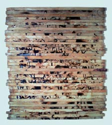 5.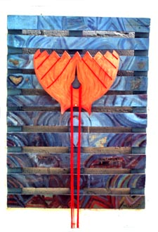 6.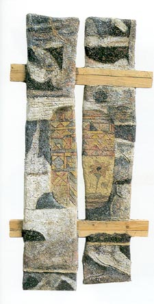
4. Tayseer Barakat, untitled, 1997. Burnt wood, 77 x 88 cm.
5. Ahmad Kanaan, Kite in a Hebron Sky, 1994. Wood, wool, and metal, 104 x 76 cm.
6. Sliman Mansour, untitled construction, 1992. Mud, henna, lime, watercolor on wood, 110 x 40 cm.
In these three works by Barakat, Kanaan, and Mansour, found wood has become the basis for different ways of working. Barakat burn images into it in a form that reminds us of ancient Egyptian pictographs. Kanaan has painted on a found crate and added some specialized shape over it as a kite. Mansour used a paste t cover some of the wooden pieces.
7.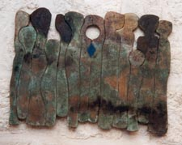
8.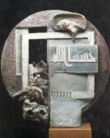
9.
7. Nabil Anani, Solidarity, 1980s. Mixed media on wood, 85 x 60 cm.
8. Mahmoud Taha, The Martyr. Ceramic, 42 x 41 cm.
9. Vera Tamari, untitled, 1980’s. Ceramic.
In these works by Anani, Taha, and Tamari, shapes are created which fit tightly adjacent to each other. It maybe be that after they made a few of the parts they built ones especially to fit between the ones that existed. There are many ways to build part and to fit them tightly adjacent to each other. In all these three works the outline of the work of art depends on how the parts fit each other and not on how the parts fit into a rectange.
10.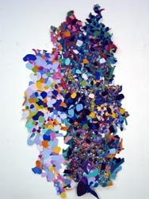 11.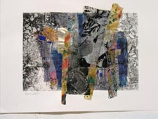
10. Samia A. Halaby, Al Quds, 2003. Acrylic on canvas, 213 x 123 cm.
11. Vera Tamari, Cactus and Stones, 2002, Mixed media collage on paper, 30.5 x 40.5 cm.
Halaby has painted on canvas with acrylics and then cut the canvas into shapes which were then sewn and glued together. Tamar prepared different papers with colors and textures and then collaged them together. In both cases, the result is an abstraction which alludes to things in reality. Also, both works result in a picture plane that is not rectangular but freely shaped according to the needs of building.
12.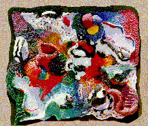 13.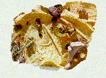 14.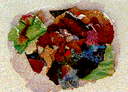
12, 13, and 14. are works by students at Beirzeit university working with artists Samia A. Halaby and Vera Tamari. The works were made using paper mache and water based poster paints. Parts were built separately then adhered together with more paper mache. Waste paper was collected from all the college departments and then used with wheat paste to create these works. You can look them up at http://www.art.net/~samia/pal/bzu/bzu.html
15.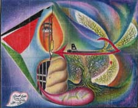 16.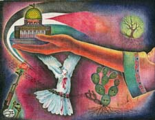
15. Zuhdie Al Adawi, Connections, 1984. Crayons on cloth 37.5 x 29 cm.
16. Muhammad Al Rakoui, Cactus, 1983. Crayons on cloth, 30.5 x 39 cm.
Zuhdie Al Adawi and Muhammad Al Rakoui are both Palestinian artists who were freedom fighters. Adawi spent 14 years at Askalan prison and Rakou spent 13 years at the same prison. They became familiar friends in prison and developed their art there. They both live in Damascus and continue creating art. In both the works above, ideas are narrated through symbolic imges. Each image is chosen for its meaning and combined for the way it would enhance and add to the idea of the picture. Images are combines without regard to size and location. Ideas for discontinuity in time and location came from the radical and revolutionary art of the 20th century. Palestinian art of the political prisoner is similar in spirit and idea to the art of the Mexican muralists such as Diego Rivers, Sequiros, and others.
See some Pictures in support of the history of this project. There are even More Pictures if you wish to see more.
Early in the 20th century, Palestinian artists began to make a transition from
ancient and medieval methods of creating art to more modern ways. This transition
culminated in a movement of national significance – the Liberation art movement which
took place during the last 30 years of the century. Some of the artists of the movement
are Nabile Anani, Tayseer Barakat, Mustafa Al Hallaj, Jumana El Husseini, Sliman Mansour,
Abdal Rahman Al Mozayen, Samir SALAME
Side by side with the artists who explored the empirical, on-sight painting of
scenery were artists who continued to expand on the language of medieval Arabic abstraction.
The best known of them is the artist Jamal Badran who worked during most of the 20th
century. The geometric abstraction typical of the Dome of The Rock in Al Quds has a
long history in Palestinian art which goes all the way back to the mosaics of the Christain
Arab phase. In early mosaics, one sees the tendency toward geometric abstraction. This
abstraction is also an image of reality but not an empirical one where the artists sits
and observes nature directly. It is one where the artist comprehends the rhythm and
pattern of nature and uses it to create visual arrangements.
In the traditional arts of the Arab world, the method of assembling parts is
common. There are ample examples of inlaid work including wood and mother of pearl
inlays, marble inlays, Stained glass windows, wooden screens, and more.
Palestinian artists being Arab and used to abstraction in art in their own
history – did not spend much time with illusionism. One of the first to abandon
illusionism was Jabra Ibrahim jabra. He took a bold step forward during the 40’s
and 50’s and began working with the most modern abstract trends of the 20th century.
One can see Futurism and Cubism in his work combined with his very Arabic sense of
fitting parts together.
Among the liberation artists of Palestine, an aesthetic attitude developed that to
serve their cause they would create a new Palestinian art which would speak clearly
to their own people. They would base this work on the historic forms of Arabic art
and on the radical traditions of the 20th century. Thus artists sought subjects and
symbols directly meaningful to the Palestinian masses.
Liberation artists felt that they were privileged to possess a Qadiyyah -- a revolutionary
cause -- and that they had a duty to serve it by using clear symbols. They were pleased
if their work was accepted by the masses outside Palestine; but to them being understood
by their own population came first. Artists used the many popular symbols that emerged
from the 1948 tragedy of exile. Symbols of the ongoing liberation struggle, with its
attendant pain and loss, predominate. When Palestinians later felt their identity
threatened, artists selected subjects from Palestinian folklore, Arab art history,
and the geographic attributes of the land of Palestine.
The liberation artists broke with Renaissance illusion as they also broke with the
Renaissance idea of the shape of the picture known as the picture plane. The
treatment of the boundary of a picture as a two-dimensional surface (the picture plane),
or the invisible three-dimensional envelope of a sculpture, is a basic method in visual
language. The artist locates the parts so that they simultaneously relate to each other
and to the all-important invisible boundary. Concepts regarding the boundaries of a work
of art grow in sophistication as technology advances and as mankind itself develops.
Italian Renaissance artists developed concepts of the picture plane as a window through
which we see the world.
Many Palestinian artists make the parts of their artwork before the whole is fully
conceived. Since the art is symbolic, the parts are assembled to narrate the subject
and not to fit into a rectangular boundary -- an irregular picture plane emerges.
Different examples of assembling parts to create visual form are abundant in artists’
surroundings. Daily they see objects made of inlaid wood. Tessellated ceilings, mosaics,
inlaid marble walls, and stained glass windows are more abundant in the history of Arab art
than elsewhere. By combining Arabic tradition with the contemporary needs of liberation
symbolism, some Palestinian artists abandon the picture plane as window.
Also adopted from Cubism and abstraction is the relative absence of shading, foreshortening,
and perspective. Most Palestinian and other Arab artists do not choose to create an illusion
of depth through shading or perspective. This type of realism is avoided and held in small
regard as academic. Nabil Anani said, “I do not like shading and the third dimension in
painting. There is a third dimension in Abstraction but it is expressed in a different way.
Depth as perspective is not part of Arabic pictorial arts.”
Select from the following menu representing the entire studio:
![[Art on the Net]](/images/artnet_button.gif)